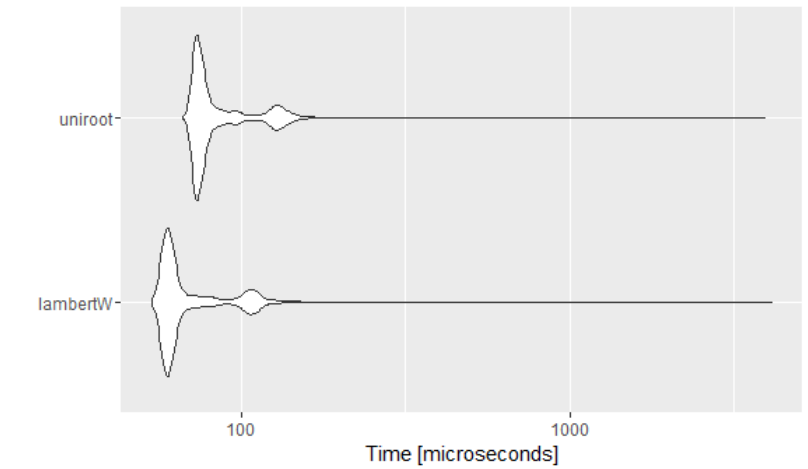

Getting that X with the Glog function and Lambert's W
Facing a simple, yet frustrating formula like this
\[xe^{ax}=b\]
and the task to solve it for x left me googling around for hours until I found salvation in Wolfram Alpha, Wikipedia, and a nice blogpost with R-syntax to solve a similar equation.
Using the results from Wolfram Alpha I was able to find the solution with the gsl library
# install.packages("gsl")
library(gsl)
# create some example data
dat <- data.frame(a = 0.109861, x = 10)
# a is set so that b is roughly 30.
# Lazy as I am I used Excel and its solver ability to find numbers
# to check if b is close to 30. Using the initial formula
dat$b <- dat$x * exp(dat$a * dat$x)
dat
# solve for x2 and see if x and x2 are similar and close to 10
dat$x2 <- lambert_W0(dat$a * dat$b)/dat$a
dat
#> a x b2 x2
#>1 0.109861 10 29.99993 10.00001Hurray!
Sometimes life can be so easy (after a long time searching for the right results….).
Appendix: Improvements
After revisiting this article some time later, I wondered what the speed is compared to Dan Kelley’s (see comment below) alternative. After firing up some repetitions using microbenchmark I got the following:
library(gsl)
library(rootSolve)
library(microbenchmark)
library(ggplot2)
dat <- data.frame(a = 0.109861, x = 10)
dat$b <- dat$x * exp(dat$a * dat$x)
f <- function(x, a, b) x*exp(a*x) - b
autoplot(microbenchmark(
lambertW = dat$x2 <- lambert_W0(dat$a * dat$b)/dat$a,
uniroot = dat$x3 <- uniroot.all(f, interval = c(0, 100),
a = dat$a, b = dat$b),
times = 10000))
David Zimmermann, PhD
Data Scientist
I am an economist by training, turned programmer/data scientist who loves to program with R, Python, and C++.